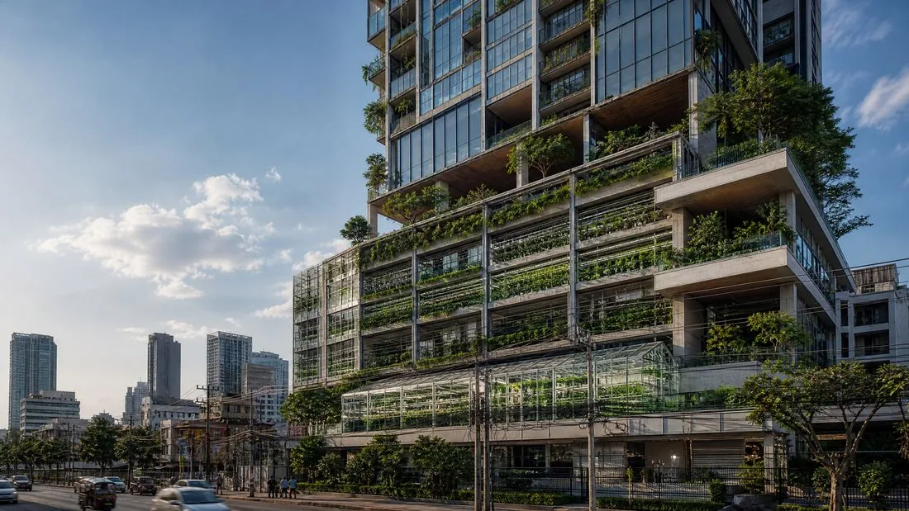
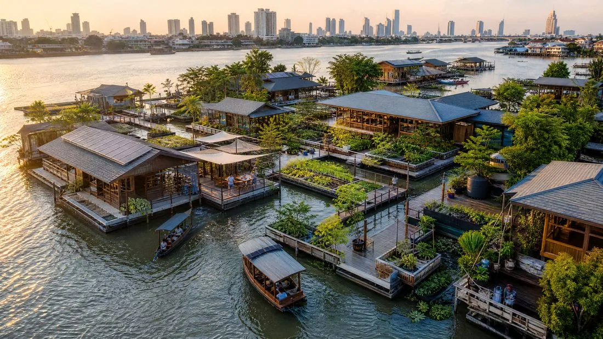

Architecture Journal

Underground Architecture: The New Inverted Verticality
Thermal mass, fiber-optic heliostats, flood-smart urbanism: how Bangkok is reinventing depth to escape the heat and urban saturation.

Regenerative Architecture
Biodiversity corridors, pollinator-friendly facades, ecosystem restoration: when buildings stop doing harm and start repairing.

High-Tech Timber Architecture (Mass Timber)
CLT, glulam, carbon sequestration: how structural timber is redrawing skyscrapers and turning cities into carbon sinks.

Vernacular 2.0: Reinventing Ancestral Knowledge
Thermal simulation, augmented local materials, artisanal know-how: how the algorithm is bringing ancestral building techniques back into fashion.

Architecture and Food Security
Hydroponics, aeroponics, building-integrated vertical farms: how architecture is becoming an active player in urban food security, neighbourhood by neighbourhood.

Resilient and Floating Architecture
Amphibious structures, floating neighbourhoods, corrosion-resistant materials: how Bangkok is becoming a global laboratory for architecture facing rising waters.

3D Printing and Construction Robotics
Layer-by-layer printed concrete, robotic bricklayers, technological conductor: how automation is reshaping the architect's role without replacing it.

Wellness Architecture and Biophilic Design
Living walls, organic forms, low-carbon materials: how biophilic design is reshaping the way spaces are conceived for their occupants' physical and mental health.

Thailand: When Tradition Meets Tropical Modernism
Stilts, deep roof overhangs, bamboo and raw concrete: how a new generation of Thai practices is reinventing vernacular housing to meet climate and Bangkok's urban density.